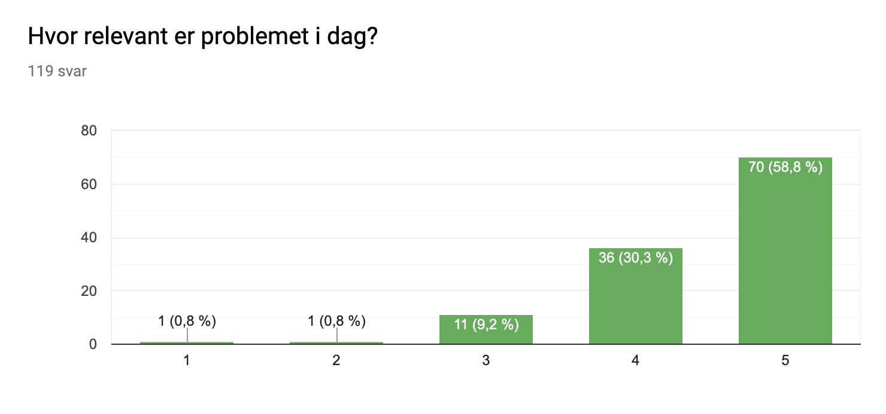

Løsningen
For å svare på dette problemet introduserer vi vår løsning GreenRoutine. GreenRoutine er både en app og en maskin som jobber mot å gi mennesker en grunn til å resirkulere. Vår idé fungerer på en simpel måte, jo mer du resirkulerer med våre maskiner, desto flere poeng får du. Poengene kan senere bli brukt i appen mot å få rabatter og priser. GreenRoutine er løsningen mot å gjøre flere mennesker aktivt engasjert i å resirkulere søppel.
Hvordan fungerer applikasjonen?
Når du først logger deg inn i appen, får du opp en meny med din egen QR-kode. Dette er koden som også brukes for å kunne starte opp maskinen. Med andre ord, så er appen og maskinen koblet sammen. Appen har en oversikt over poenglisten din og antallet poeng du har samlet opp fra å resirkulere. Du har også statistikk over hvor mye av hver søppelsort du har kastet på en ukentlig basis, og nivåbaserte utfordringer slik at du kan gå opp i nivå og samle mer poeng. I tillegg har du en kuponskategori hvor du kan se hva slags type tilbud du får. Tilbudene varierer med tiden.
Hvordan fungerer maskinen?
En luke åpnes når du holder QR-koden på din mobilskjerm mot maskinens hovedskjerm. Dette er åpningen hvor du sender ditt avfall til resirkulering. Maskinen aksepterer kun avfall inn i lukkede resirkuleringsposer: Blå poser for plast, grønne poser for matavfall og andre fargede poser for restavfall. Husk å lage en dobbeltknyte hver av posene! Maskinen har en fargesensor som skiller mellom hver pose ut i fra fargen. I tillegg veies søppelposen i hovedrøret vårt. Hver av disse prosessene skjer samtidig. Videre forgreines hovedrøret seg til tre mindre rør. Disse er koblet til hver sin forbeholdte avfallsbeholder basert på hva slags avfallssort det er i posen. Maskinen vår registrerer vekten på posene dine i gram, noe som resulterer et visst antall poeng som kan brukes på kuponger og rabatter.
Etter at du har skannet din personlige QR-kode, vil du merke deg at skjermen på maskinen vil muntlig og skriftlig fortelle deg om din personlige QR-kode er gyldig eller ei. Skjermen vil også vise deg en rød eller en grønn farge som indikerer denne gyldigheten.
Vi ønsker at alle brukerne våre skal ha et lett møte med gjenvinningsmaskinene våres. Derfor gir skjermen instruksjoner i form av animasjoner, ved muntlig forklaring eller med tekst om hvordan du kan resirkulere. Disse instruksjonene kan slås av dersom man ønsker det. Animasjonen vår kjøres i omtrent ett minutt. Etter at det har gått fem minutter, lukker maskinen automatisk luken. Du kan også velge å lukke luken manuelt ved å skanne QR-koden din på hoveddisplayet igjen.
Hvorfor bruke GreenRoutine:
Toveisløsningen vår er å tilby en personlig, fleksibel og morsom måte å gjøre resirkulering til en del av din daglige rutine. Med vår løsning vil du få kraften til å gjøre skitt og søppel til gull. Vi er troende på at enhver handling teller. Ved å bruke appen vår, vil handlingene dine ha umiddelbare positive konsekvenser for lokalsamfunnet ditt. Vi skaper en bevegelse - en økokultur som dreier seg om å få livet i din kommune til å blomstre. Bli miljøborger i dag ved å implementere Green Routine i hverdagen din.
For brukere med nedsettinger:
- Svekket syn:
- Hørselsnedsettninger:
- Nedsatt motorisk evne:
- Blind:
- Punktskrift:
- Et enspråklig menneske:
- Personer som er fargeblinde:

Through an anonymous survey, we asked a total of 119 people: «How relevant is this problem today?». Most of the people we asked to complete the survey is of the younger generation, primarily of the age range 18-20. Of these people, a total of 58.8% told us that this is a very relevant problem today. We also had a total of 30.3% seeing this problem as «mostly relevant». This give us a good indication that the majority of the younger generation in Oslo believes that this is an important problem that needs a suitable solution.
Kontakt oss for tips om hvordan du kan forbedre din brukeropplevelse. Send oss en mail HER.